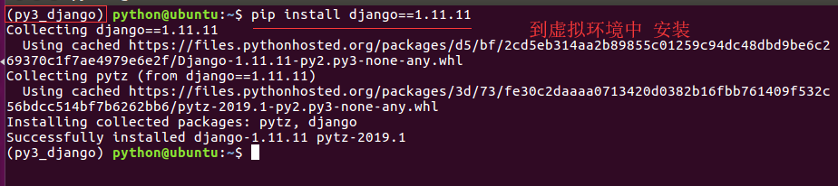

为什么要搭建虚拟环境?
- 在开发过程中, 当需要使用
python的某些工具包/框架时需要联网安装- 比如联网安装Django框架django的1.11.11版本
sudo pip install django==1.11.11
- 提示：使用如上命令, 会将Django安装到
/usr/local/lib/python2.7/dist-packages路径下 - 问题：如果在一台电脑上, 想开发多个不同的项目, 需要用到同一个包的不同版本, 如果使用上面的命令, 在同一个目录下安装或者更新, 新版本会覆盖以前的版本, 其它的项目就无法运行了.
- 解决方案:
虚拟环境- 作用:
虚拟环境可以搭建独立的python运行环境, 使得单个项目的运行环境与其它项目互不影响. - 所有的
虚拟环境都位于/home/下的隐藏目录.virtualenvs下
- 作用:
如何搭建虚拟环境?
- 安装虚拟环境的命令 :
sudo pip install virtualenv
sudo pip install virtualenvwrapper
安装完虚拟环境后，如果提示找不到mkvirtualenv命令，须配置环境变量：
# 1、创建目录用来存放虚拟环境
mkdir
$HOME/.virtualenvs
# 2、打开~/.bashrc文件，并添加如下：
export WORKON_HOME=$HOME/.virtualenvs
source /usr/local/bin/virtualenvwrapper.sh
# 3、运行
source ~/.bashrc
创建虚拟环境的命令 :
- 提示：如果不指定python版本，默认安装的是python2的虚拟环境
在python2中，创建虚拟环境
mkvirtualenv 虚拟环境名称 例 ： mkvirtualenv py_django在python3中，创建虚拟环境
mkvirtualenv -p python3 虚拟环境名称 例 ： mkvirtualenv -p python3 py3_django
提示 :
- 创建虚拟环境需要联网
- 创建成功后, 会自动工作在这个虚拟环境上
- 工作在虚拟环境上, 提示符最前面会出现 “虚拟环境名称”
如何使用虚拟环境?
- 查看虚拟环境的命令 :
workon

- 使用虚拟环境的命令 :
workon 虚拟环境名称
例 ：使用py3_django的虚拟环境
workon py3_django

- 退出虚拟环境的命令 :
deactivate
- 删除虚拟环境的命令 :
rmvirtualenv 虚拟环境名称
例 ：删除虚拟环境py3_django
先退出：deactivate
再删除：rmvirtualenv py3_django

如何在虚拟环境中安装工具包?
提示 : 工具包安装的位置 :
- python2版本下：
~/.virtualenvs/py_flask/lib/python2.7/site-packages/
- python3版本下：
~/.virtualenvs/py3_flask/lib/python3.5/site-packages
- python2版本下：
python3版本下安装django-1.11.11的包 :
pip install 包名称
例 : 安装django-1.11.11的包
pip install django==1.11.11

- 查看虚拟环境中安装的包 :
pip list